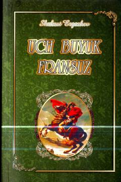

UBFransiyaning uch buyuk arbobi Rishelye, Napoleon va de Goll hayotiga bag'ishlangan tarixiy kitob.
Kitob Fransiyaning XVII—XX asrlardagi qariyb 350 yillik tarixining eng murakkab davrlariga mansub bo‘lgan uch buyuk arbobi — kardinal Rishelye, Napoleon Bonapart va Shari de Goll hayoti hamda faoliyatiga bag‘ishlangan. Mazkur tadqiqot o‘zbek kitobxonlariga Fransiya tarixi va uning mashhur siymolari haqida atroflicha ma'lumot beradi. Asar muallif Shuhrat Ergashev tomonidan 2016 yilda Toshkentda nashr etilgan.